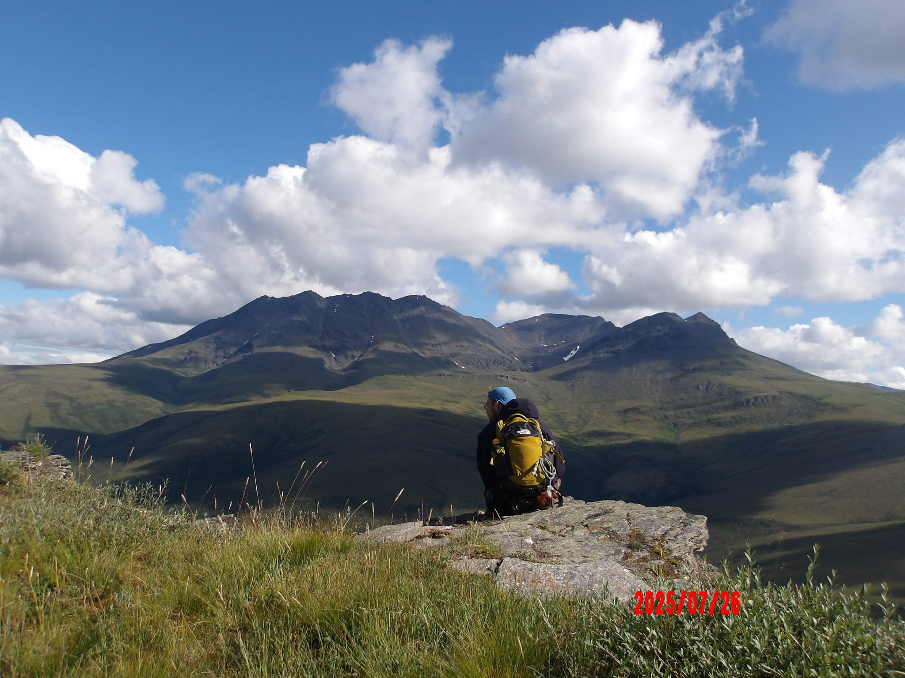
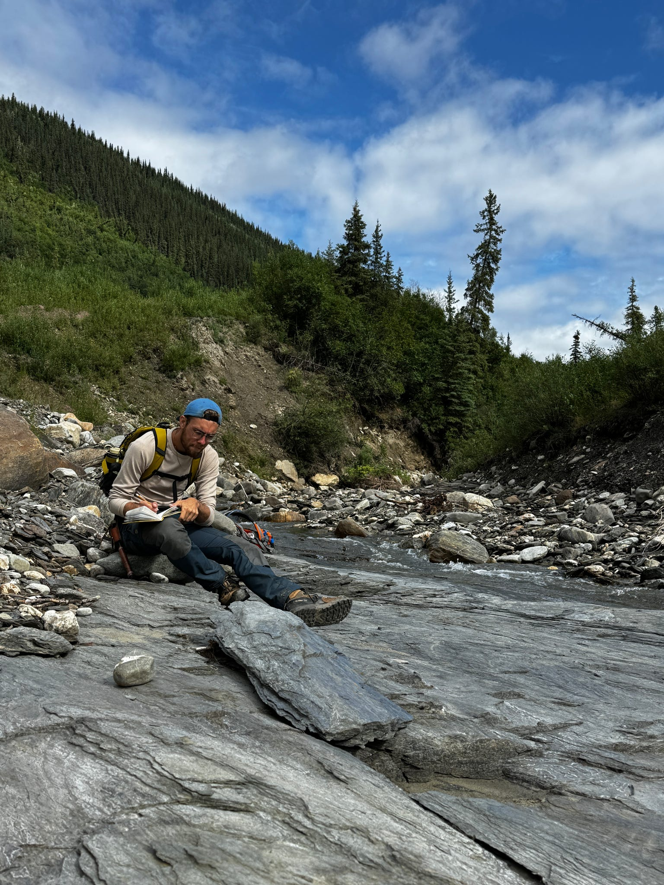
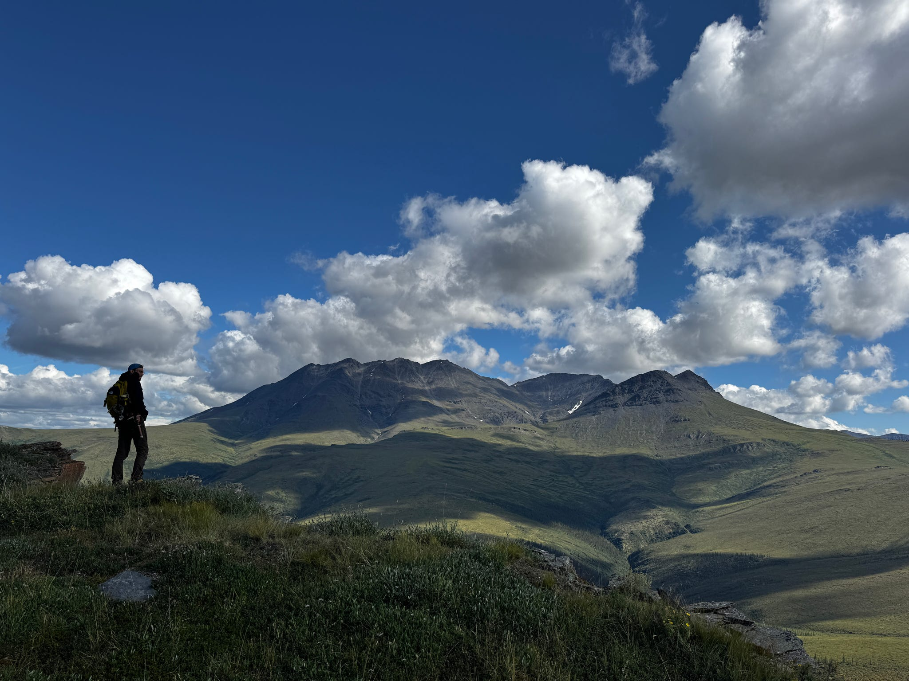

Geology & Geography Portfolio
I’m a Geology & Geography double major at the University of Florida focused on GIS analysis, remote sensing, hazards, and structural/stratigraphic research.
View ProjectsAbout
My work brings together geologic understanding and spatial analysis to support decision-making across hazards, environmental health, and resource systems. I’m particularly interested in field-focused research enabled by GIS and reproducible workflows. Moreover, I have a interest in igneous petrology and volcanology with hope to enter grad-school studying these topics.
Selected Projects
Field Photos


